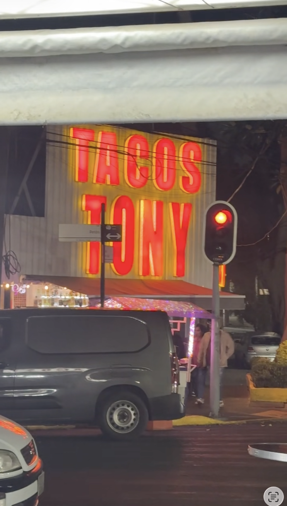
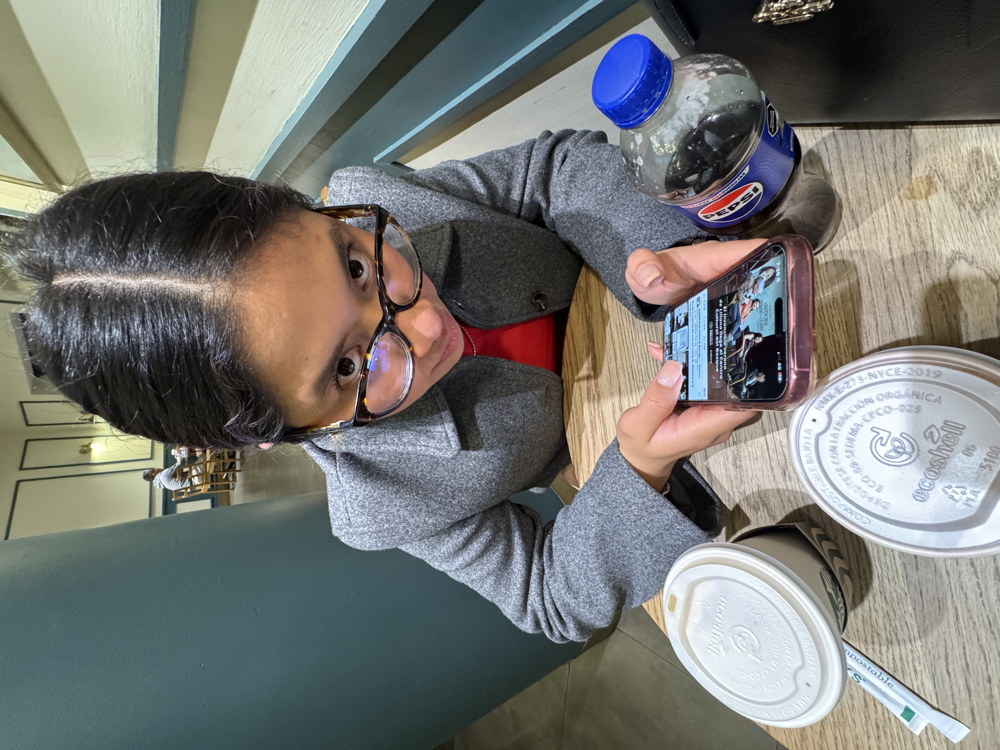
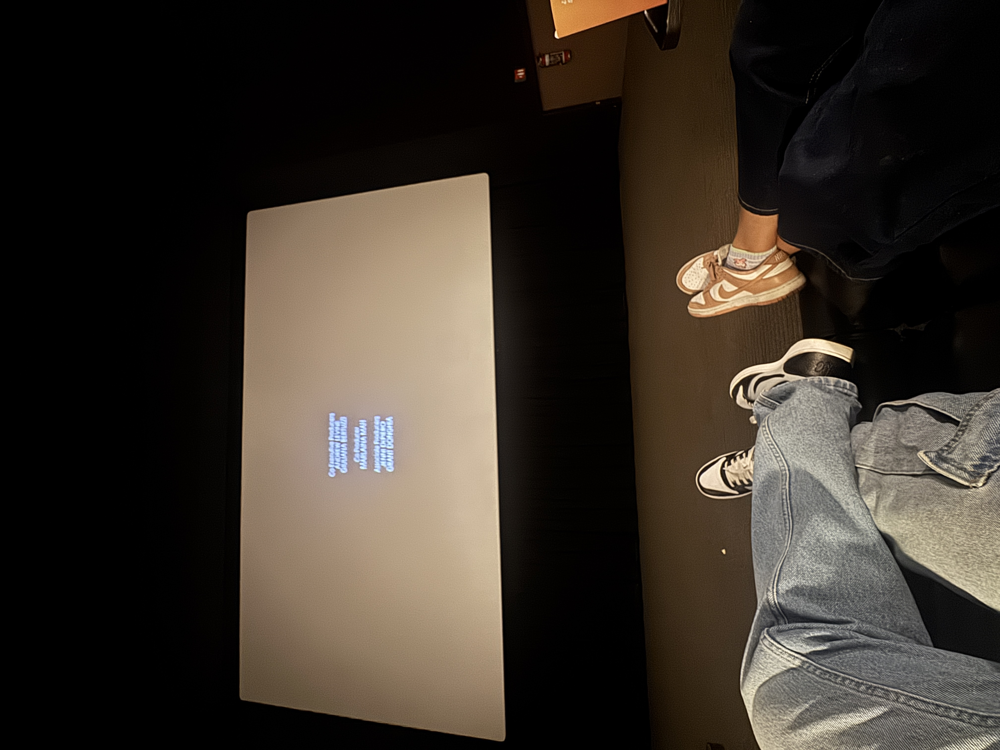

Capítulo
Dos
"Qué suerte tengo de tener algo tan especial que decir adiós sea tan difícil."
Nuestro segundo mes
Hola, mi linda novia.
Aunque de nuevo nos toca abrazarnos a la distancia hoy 3 de junio, no quería dejar pasar el día sin recordarte lo inmensamente feliz que me haces. Cuando repaso todo lo que vivimos estas últimas semanas, me doy cuenta de que cada esfuerzo, cada kilómetro y cada viaje vale la pena si es para verte sonreír.
Aquí tienes los recuerdos de nuestro mes de tilines plasmados en este diario.
Misión 8
Por fin regresaste de Veracruz. Mi día empezó a las 5 AM para ir por ti a la terminal; fue nuestro primer acercamiento del mes. Más tarde en mi cuarto completé la Misión 8: me tomó horas elegir y adornar estas flores, pero al entregártelas en tu casa y ver tu carita, supe que había logrado hacer algo único.
Abrazos de papel
Fuimos al cine, pero antes me sorprendiste apagando una "vela imaginaria" de nuestro pastel. Y no solo eso... el detalle de los Kinder Delice con tus vales, y esa carta especial para cuando necesite un abrazo, me hizo el hombre más feliz. Guardo cada nota en mi cartera.
Odisea del Turibús

Viajé desde Puebla y empezamos ayudándote a abrir el negocio de tu papá, algo que anhelaba compartir contigo. En la tarde, ¡la tercera fue la vencida con el Turibús! Pese a mi error con la hora, el cierre al Zócalo y la lluvia, logramos nuestro paseo nocturno. Terminamos en Coyoacán, comprando a nuestros "hijos" peluches.
Jamaica a medianoche

Un clásico domingo de novios que concluyó perfectamente con unos tacos Tony. Ese mismo día, después del triste momento de despedirnos, tuve la Misión 9 de flores y pude confirmar personalmente un mito: el mercado de Jamaica sí es de 24 horas.
El Pato Mandarina

Nos vimos muy temprano y por fin te entregué tu flor número 9 junto con el "Pato Mandarina", un peluche que había comprado para ti desde el inicio de 2024. Después de tu trabajo fuimos a cenar hamburguesas y al cine. Así cerró esa semana.
Fresas y Cheesecake

El sábado les llevé cemitas y fuimos a caminar por Coyoacán comiendo fresas con crema; me encantan esos momentos contigo. El domingo tuvimos nuestro ratito de novios que cerramos compartiendo un cheesecake con tu familia.
Viaje Express

Día súper agitado. Me regresé a Puebla en autobús desde las 6 AM y volví a CDMX a las 4 de la tarde solo para poder pasar por ti. Tomamos un cafecito juntos. Cada viaje relámpago lo vale completamente.
Enchiladas de 10

El 26 fue mi entrevista de trabajo. Gracias al amigo tilín pude quedarme para esperarte a que salieras. Nos reencontramos hasta el día 30, donde fuimos al cine y por fin volví a probar esas enchiladas suizas que te juro son un 10/10.
Misión 10 🌸
Quería que el último día del mes fuera inolvidable. Cuidé minuciosamente la frescura del centro de cada mini gerbera para prepararte este detalle. Así logré la Misión 10: La décima flor entregada a la mujer que tanto amo.
Hacia el 3er mes
El 1 de junio nos vimos súper temprano para llevarte al trabajo. Fue breve, pero fue el banderazo de salida de nuestro tercer mes juntos. Valoro infinitamente que siempre te preocupes por mí.
Sigamos compartiendo esta historia. Feliz segundo mes.